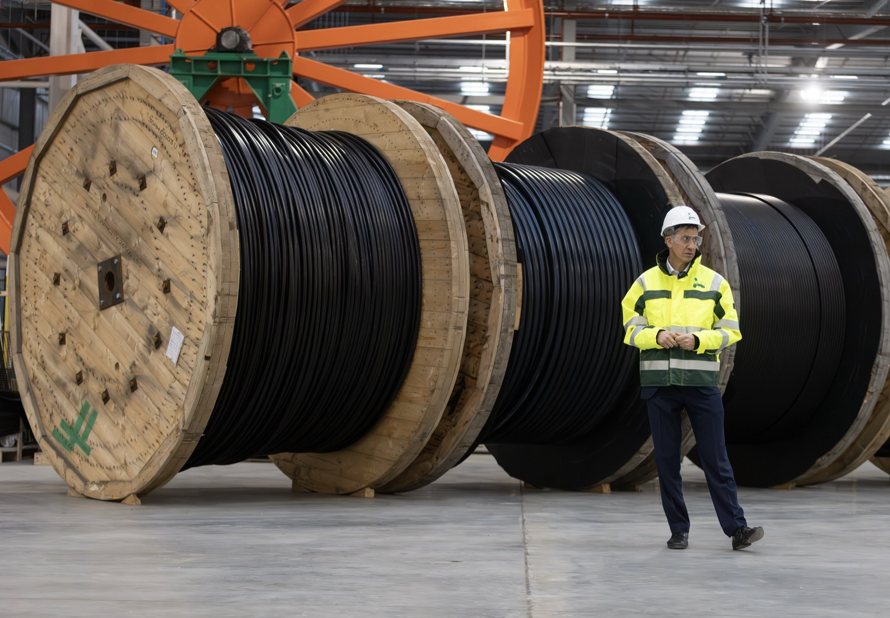
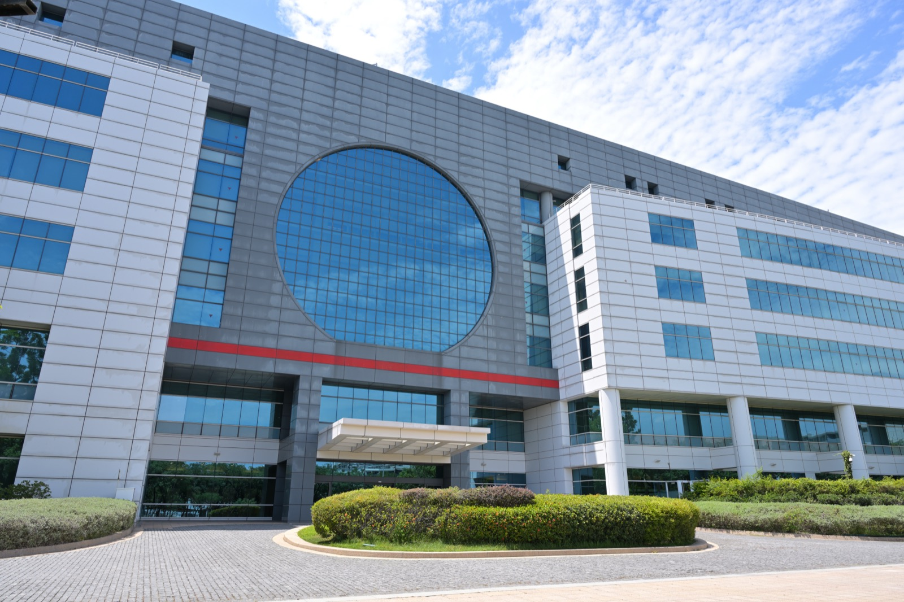
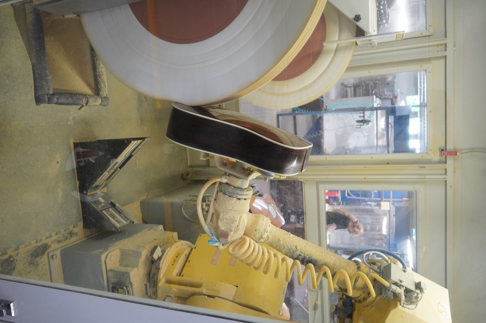
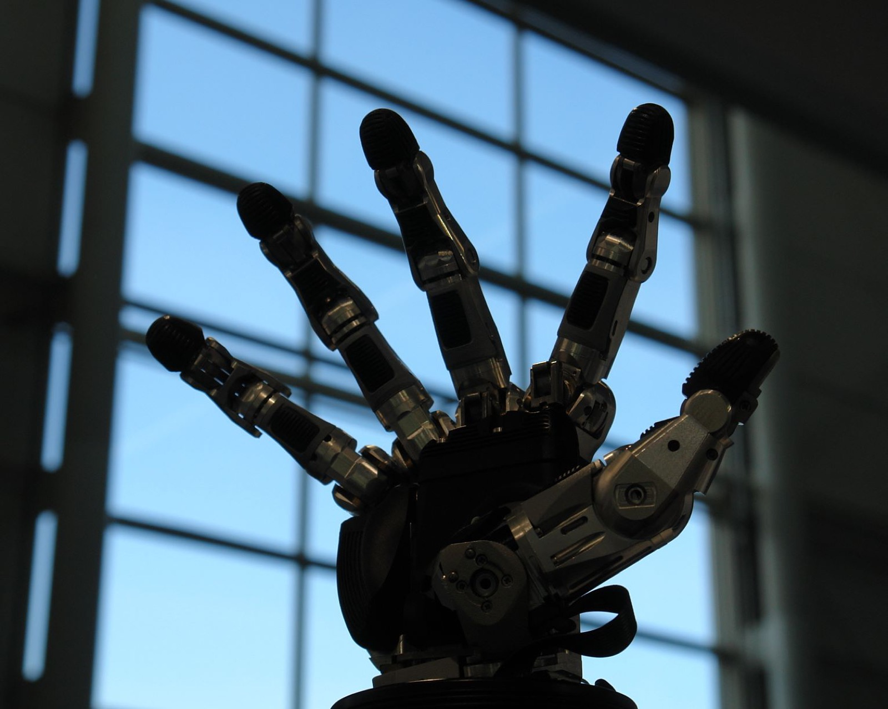

Executive Summary
2026년 7월 1일, 금융위원회와 산업통상부가 로봇·미래차·반도체를 포함한 6개 산업의 '피지컬 AI'에 약 16조 원(103억 달러)의 정책금융을 배정한다고 발표했다. 국민성장펀드가 대는 이 돈은 공장 증설과 로봇·반도체 제조 설비로 흐른다. 그런데 그 예산이 무엇을 사고 무엇을 사지 않는지를 데이터 공급의 관점에서 뜯어보면, 정작 한 항목이 비어 있다.
디지털 AI는 웹에 이미 쌓인 텍스트와 이미지를 긁어 학습한다. 피지컬 AI는 다르다. 로봇이 물건을 쥘 때의 힘, 미끄러짐, 현장의 소음 같은 물리 데이터는 접촉이 일어나는 순간에만 만들어지고 크롤링되지 않는다. 16조 원의 배분 항목에는 이 데이터를 수집·정제하는 몫이 명시적으로 보이지 않는다.
정책의 옳고 그름을 판정하려는 글이 아니다. 하드웨어에 자본이 쏠리는 사이, 16조 원이 만들 기계를 실제로 학습시킬 데이터는 누가 어디서 확보하는가. 그 시차(lag)에 관한 물음을 남긴다.
주요 수치
출처: 대한민국 정책브리핑, Let's Data Science
16조 원
피지컬 AI 정책금융
2026년 6개 산업 배정액 (103억 달러)
1,350조 원
3대 메가 프로젝트
반도체·피지컬AI·데이터센터 10년 계획
800억 원
1호 프로젝트 저리대출
LS전선 해저케이블 공장 (총 1,600억)
1%→20%
휴머노이드 점유율 목표
정부 2030 국내 시장 목표
16조 원, 어디로 갔나
2026년 7월 1일 서울 여의도 산업은행 본사에서 열린 '국민성장펀드-M.AX 프론티어 프로젝트' 민관 합동 간담회에서, 금융위원회와 산업통상부는 올해 약 16조 원(103억 달러)의 정책금융을 피지컬 AI 6개 산업에 배정한다고 밝혔다. 대상은 AI, 로봇, 미래차, 방산, 반도체, 이차전지다. 이억원 금융위원장은 "피지컬 AI는 생산성 향상과 새로운 성장 동력 창출에 기여할 수 있다"고 말했다.
이 16조 원은 국민성장펀드의 올해 공급분 30조 원 가운데 절반가량이다. 펀드 자체의 5년 조성 목표는 150조 원(민관 반반)이므로, 16조 원은 전체 펀드 규모가 아니라 올해 피지컬 AI 몫이라는 점을 구분해 둘 필요가 있다.
돈이 실제로 어떻게 나가는지는 1호 프로젝트가 보여 준다. LS전선의 동해 초고압 해저케이블 생산공장 증설이 첫 승인 대상으로, 총투자 1,600억 원 가운데 국민성장펀드가 800억 원을 10년 만기 저리대출로 댄다. 형태는 제조 설비 증설을 위한 대출이다.

1,350조 원짜리 더 큰 그림
16조 원은 그 자체로 끝이 아니라 훨씬 큰 계획의 첫 집행이다. 6월 29일 이재명 대통령은 반도체·피지컬 AI·AI 데이터센터를 잇는 '삼축 전략(triple axis)'을 발표하며, 10년간 약 1,350조 원 규모의 투자를 예고했다. 이번 정책금융은 그 삼축 가운데 피지컬 AI 축을 자본시장에서 먼저 굴리기 시작한 조치다.

같은 날 과학기술정보통신부는 '피지컬 AI 핵심 경쟁력 확보 전략'을 함께 내놓았다. 2030년까지 피지컬 AI 세계 1위, AI 로봇 세계 3위, 국내 휴머노이드 로봇 시장 점유율을 1%에서 20%로 끌어올린다는 목표다. 정책은 스케일과 방향을 동시에 선언한 셈이다.
정책 발표는 자본시장에 곧바로 반영됐다. CES 2026 이후 상장한 국내 휴머노이드 로봇 ETF의 상장 1주 수익률이 19%를 넘겼다. 하드웨어와 제조 인프라를 향한 기대가 이미 가격에 실리고 있다는 신호다.
이 예산이 사는 것
참여 기업의 면면을 보면 이 돈이 무엇으로 바뀌는지가 뚜렷하다. AI 팩토리 부문에는 LS전선·CJ대한통운·이수페타시스·대성하이텍이, 로봇 부문에는 두산로보틱스·원익로보틱스가, 미래차 부문에는 현대모비스·LX세미콘·매그나칩반도체가 이름을 올렸다. 자금은 산업은행·기업은행·농협금융을 비롯한 금융권이 함께 댄다.
목록을 관통하는 공통점은 물리적 자산이다. 공장 증설, 생산 라인 자동화, 반도체 팹, 로봇 본체 — 예산이 사는 것은 대체로 만질 수 있는 설비다. 정책 문서와 참여기업 발표 어디에도 데이터 수집·라벨링·현장 로그 축적을 위한 별도 항목은 눈에 띄지 않는다.

바로 여기서 질문이 갈린다. 스트레이트 뉴스들은 "얼마를 누구에게" 주는지를 다뤘다. 그런데 그 설비들이 실제로 일하려면, 즉 로봇 팔이 부품을 정확히 집고 공정을 스스로 조정하려면 그 동작을 학습시킬 데이터가 있어야 한다. 예산표에서 하드웨어는 보이는데 데이터는 잘 보이지 않는다.
피지컬 AI의 데이터 병목
디지털 AI와 피지컬 AI는 학습 데이터의 성질부터 다르다. 대규모 언어 모델은 웹에 이미 쌓인 방대한 텍스트를 긁어모아 학습한다. 이미지·영상도 크롤링으로 확보된다. 데이터가 세상에 먼저 있고, 모델이 나중에 그것을 읽는 구조다.
피지컬 AI는 반대다. 로봇이 물체를 쥘 때의 접촉력, 미끄러짐의 순간, 관절에 걸리는 토크, 공장 바닥의 진동 같은 물리 데이터는 실제 접촉이 일어나는 그 순간에만 생성된다. 웹 어디에도 미리 쌓여 있지 않고, 크롤러로 긁을 수도 없다. 만들려면 센서를 단 기계가 현장에서 실제로 움직여야 한다.

페블러스는 앞선 글 「휴머노이드 자본이 비껴간 촉각 데이터」에서, 민간 벤처 자본이 로봇 하드웨어와 파운데이션 모델에는 몰리면서 정작 촉각 같은 물리 데이터에는 수백 배 적게 흐른다는 구조를 짚었다. 실제로 독일 로봇 기업 Neura Robotics가 단일 시리즈 C 라운드로 14억 달러를 모으는 사이, 촉각 센싱을 전업으로 하는 스타트업의 프리시드 자금은 175만 달러에 그쳤다. 이번 정책금융은 그 관찰을 공공 자본의 영역으로 확장시킨다. 민간 자본에 이어 정부 자본까지도 하드웨어와 모델에 쏠리고, 데이터는 여전히 뒷줄에 서 있는 것은 아닌가.
그 데이터는 누가 확보하나
질문을 구체화하면 두 갈래다. 하나, 정책금융 수혜 기업이 스스로 현장 데이터를 쌓을 유인과 여력이 있는가. 두산로보틱스나 현대모비스 같은 제조사는 자사 라인에서 나오는 데이터를 확보할 조건은 갖췄지만, 그 데이터를 정제하고 공유 가능한 학습 자산으로 만드는 일은 설비 투자와는 다른 종류의 노력이다.
둘, 정부가 별도의 데이터 인프라를 마련할 몫이 있는가. 공공 데이터셋, 로봇 테스트베드, 표준화된 현장 로그 수집 체계 같은 것들은 개별 기업이 홀로 만들기 어렵고, 만들더라도 자사에 가둬 두기 쉽다. 하드웨어 보조금이 개별 설비에 붙는다면, 데이터 인프라는 산업 공통의 토대에 가깝다.

결론을 단정할 단계는 아니다. 다만 "휴머노이드 시장 점유율 1%를 20%로"라는 목표가 실현되려면, 그 로봇들을 실제로 움직이게 할 데이터가 어디서 나올지에 대한 답이 예산 어딘가에는 적혀 있어야 한다. 16조 원이 하드웨어를 세우는 첫 챕터였다면, 그 기계들을 학습시킬 데이터는 다음 챕터가 다뤄야 할 몫이다.
참고문헌
정책 발표 원문
- 1.대한민국 정책브리핑. (2026). "국민성장펀드, 피지컬 AI 6대 산업에 16조 원 정책금융 공급." korea.kr
국내 언론 보도
- 2.파이낸셜뉴스. (2026). "국민성장펀드, 피지컬 AI 6개 분야에 16조 원 배분." fnnews.com
- 3.이데일리. (2026). "국민성장펀드 피지컬 AI 정책금융, 1호 투자는 LS전선." edaily.co.kr
해외 언론 보도
- 4.Let's Data Science. (2026). "South Korea Announces $10.3B Physical AI Financing Push." letsdatascience.com
- 5.Al Jazeera. (2026). "South Korea announces more than $1 trillion AI, chip investment drive." aljazeera.com
- 6.UPI. (2026). "South Korea unveils physical AI financing under National Growth Fund." upi.com
- 7.The Korea Herald. (2026). "Korea's physical AI policy financing push." koreaherald.com
페블러스 관련 콘텐츠
- 8.Pebblous Data Communication Team. (2026). "휴머노이드 자본이 비껴간 촉각 데이터." blog.pebblous.ai